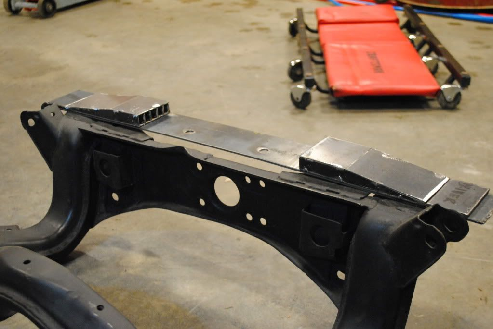

-
Re: S13/S14/S15 Subframe Conversion Kit GB-STANCE MULTILINK!
this, I did not have to do the welding and such extending the front mounts, but the rest of the swap is deff a bitch when working on your back the whole time with a pesky jack!Butter wrote: When I did mine without the kit, it took me a full weekend, starting at 9am and working till 2am.
I think with this kit, it would take me about 5 hours to get the sub installed in the car, and a weekend to get it able to drive.
Most of this work is positioning. The asymmetrical nature of the chassis and parts of the subframe don't make this easy at all. When I built the front extensions, it took 5 tries to get it right, cutting and re-welding. The whole time, I had the subframe with arms balancing on a jack, while I worked on my back. It's like doing a custom engine swap and building the necessary mounts, except you are upside down, and there is less room for error.1uz Swapped, lowered, flaked out '86 z31
'72 Datsun 510 4dr, ka24de-T, slammed resto mod
'84 z31 turbo, coils, wheels a.k.a the gfs weekend car
'86 na2t parts for now a.k.a eventually will get running with a/c daily
'83 280zx project backburner a.k.a ls turbo drag car one day
Custom vg30et tube chassis drift exocet project -
Re: S13/S14/S15 Subframe Conversion Kit GB-STANCE MULTILINK!
exactly what butter saidButter wrote: When I did mine without the kit, it took me a full weekend, starting at 9am and working till 2am.
I think with this kit, it would take me about 5 hours to get the sub installed in the car, and a weekend to get it able to drive.
Most of this work is positioning. The asymmetrical nature of the chassis and parts of the subframe don't make this easy at all. When I built the front extensions, it took 5 tries to get it right, cutting and re-welding. The whole time, I had the subframe with arms balancing on a jack, while I worked on my back. It's like doing a custom engine swap and building the necessary mounts, except you are upside down, and there is less room for error.87T, My build thread http://z31performance.com/forum/z31-…lee-s-87t-rb26 -
Re: S13/S14/S15 Subframe Conversion Kit GB-STANCE MULTILINK!
Cuts down install time. If I had to take all the measurements to locate the rear studs, I wouldn't have anything welded yet. Takes a lot of the thinking out of it. I would actually be done by now, if I didn't ENJOY "space-shuttling".DMANN wrote: I see all this stuff of people writing about this kit.
What has made the kit easier to do the swap than just swapping the subframe in with out the kit?

"…i think bov needs oil, its not closing fast enough so the car dies when you come off of boost…" -Automotive Genius -
Re: S13/S14/S15 Subframe Conversion Kit GB-STANCE MULTILINK!
BSRJ: Wow, that's pretty impressive how you stepped up the stud mounts like that. I just cut about 3 pieces of 1/8th steel stacked them in there and welded it all up87T, My build thread http://z31performance.com/forum/z31-…lee-s-87t-rb26 -
Re: S13/S14/S15 Subframe Conversion Kit GB-STANCE MULTILINK!
Yeah, that's the way I've seen it done in other threads. But that's quick, and easy. Pff! :lol:Spooledup300z wrote: I just cut about 3 pieces of 1/8th steel stacked them in there and welded it all up
"…i think bov needs oil, its not closing fast enough so the car dies when you come off of boost…" -Automotive Genius -
Re: S13/S14/S15 Subframe Conversion Kit GB-STANCE MULTILINK!
Thanks to the hoarders of rare expensive parts, stance ruca's and tractions bars are on back order until mid may. So I had to source a ruca that would clear the coilover, until my stance parts come in, what I found was the J30's ruca clears with no problem.
[attachment=0:2kvowbaj]j30 ruca vs s13 ruca.JPG[/attachment:2kvowbaj]87T, My build thread http://z31performance.com/forum/z31-…lee-s-87t-rb26 -
Re: S13/S14/S15 Subframe Conversion Kit GB-STANCE MULTILINK!
The S13, Z32, and S14,15 all work.
The J30's look the same as the S14.
I would suggest the J30's and S14's because of the single bar easier to get to the coilover and adjust/remove if needed.88na2T-s13,q45 swap 12.6@110mph
87T 2+2 auto,stock -
Re: S13/S14/S15 Subframe Conversion Kit GB-STANCE MULTILINK!
much better break down on info than my above post, thanx Dmann.DMANN wrote: The S13, Z32, and S14,15 all work.
The J30's look the same as the S14.
I would suggest the J30's and S14's because of the single bar easier to get to the coilover and adjust/remove if needed.
btw, for the people that are doing this conversion, If you choose to use the ebay S subframe rear links, please do your research.87T, My build thread http://z31performance.com/forum/z31-…lee-s-87t-rb26 -
Re: S13/S14/S15 Subframe Conversion Kit GB-STANCE MULTILINK!
essplain? what did you come across?Spooledup300z wrote: If you choose to use the ebay S subframe rear links, please do your research.
i was honestly looking at the cheapo isis kit if i intend to install this thing over the winter. or bings… not sure yet. -
Re: S13/S14/S15 Subframe Conversion Kit GB-STANCE MULTILINK!
If you get the ebay ones make sure that you OIL ALL JOINTS as much as you can, and often as you can!88na2T-s13,q45 swap 12.6@110mph
87T 2+2 auto,stock -
Re: S13/S14/S15 Subframe Conversion Kit GB-STANCE MULTILINK!
It doesn't even matter how much you oil them, they are soo scary. I've seen the joints fail after 1 dday.
The ebay ones on my car, I replaced with Aurora rod ends. Ended up paying more in total than a quality set. And there is still some nervous-ness with thin, rusty wall tubing and possible poor welding.sigpic -
Re: S13/S14/S15 Subframe Conversion Kit GB-STANCE MULTILINK!
hmmm. noted.
anyone with experience on bings products? I know some people who say they used to be good… back when he started out and didn't send absolutely everything overseas.
but apparently they can be had for a good price and they're still relatively good?
maybe i'll just go PBM. -
Re: S13/S14/S15 Subframe Conversion Kit GB-STANCE MULTILINK!
This. Or go with SPL or Stance. All three of these brands are great quality and you wont have any regrets.Careless wrote: maybe i'll just go PBM. -
Re: S13/S14/S15 Subframe Conversion Kit GB-STANCE MULTILINK!
anyone running a q45 diff yet?DD:
86 Black Turbo 5spd
The Fallen:
84 red n/a auto Slicktop, 86 Black 2+2 n/a 5spd
Parting Currently:
86 White Turbo 5spd, 88 n/a 5spd, 84 AE, 88 Shiro #64
Garage Sale -
Re: S13/S14/S15 Subframe Conversion Kit GB-STANCE MULTILINK!
I am and DMANN is also, but I'm not sure if he has driven on his yet, I'm waiting on my driveshaft from the shop, which should be a few days away and then i can go and drive the shit out of my car!MADMIKE wrote: anyone running a q45 diff yet?1uz Swapped, lowered, flaked out '86 z31
'72 Datsun 510 4dr, ka24de-T, slammed resto mod
'84 z31 turbo, coils, wheels a.k.a the gfs weekend car
'86 na2t parts for now a.k.a eventually will get running with a/c daily
'83 280zx project backburner a.k.a ls turbo drag car one day
Custom vg30et tube chassis drift exocet project

Copyright © 2006–. All rights reserved. Privacy Policy